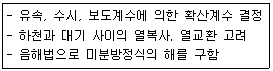
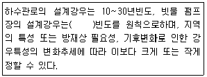
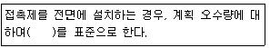
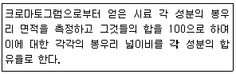
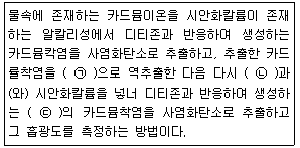
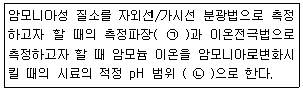
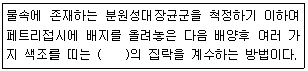
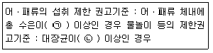
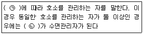
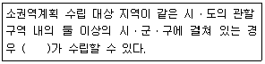

1과목: 수질오염개론
1. 물의 특성에 관한 설명으로 옳지 않은 것은?
2. 산성강우에 대한 설명으로 틀린 것은?
3. 적조(Red Tide)에 관한 설명으로 틀린 것은?
4. 연속류 교반 반응조(CFSTR)에 관한 내용으로 틀린 것은?
5. 하천 모델 중 다음의 특징을 가지는 것은?

6. 곰팡이(Fungi)류의 경험적 화학 분자식은?
7. 호수의 부영양화에 대한 일반적 영향으로 틀린 것은?
8. 미생물 영양원 중 유황(sulfur)에 관한 설명으로 틀린 것은?
9. 호수의 수질특성에 관한 설명으로 옳지 않은 것은?
10. 0℃에서 DO 7.0mg/L인 물의 DO 포화도는 몇 %인가? (단, 대기의 화학적 조성 중 O2 는 21%(V/V), 0℃에서 순수한물의 공기 용해도는 38.46mL/L, 1기압 기준 기타 조건은 고려하지 않음)
11. 다음의 유기물 1mole 이 완전 산화될 때 이론적인 산소요구량 (ThOD)이 가장 작은 것은?
12. 건조고형물량이 3000kg/day인 생슬러지를 저율혐기성소화조로 처리한다. 휘발성고형물은 건조고형물의 70%이고 휘발성고형물의 60%는 소화에 의해 분해된다. 소화된 슬러지의 총고형물은 몇 kg/day인가?
13. 소수성 콜로이드의 특성으로 틀린 것은?
14. 생물농축에 대한 설명으로 가장 거리가 먼 것은?
15. 25℃, 2atm의 압력에 있는 메탄가스 5.0kg을 저장하는데 필요한 탱크의 부피는? (단, 이상기체의 법칙 적용, R =0.082 Lㆍatm/molㆍK)(오류 신고가 접수된 문제입니다. 반드시 정답과 해설을 확인하시기 바랍니다.)
16. 우리나라 연평균강수량은 약 1300mm 정도로 세계 연평균 강수량 970mm에 비해 많은편이지만, UN에서는 물 부족 국가로 인정하고 있다. 이는 우리나라 하천의 특성에 의한 것인데, 그러한 이유로 타당하지 않은 것은?
17. 호소의 성층현상에 관한 설명으로 옳지 않은 것은?
18. 프로피온산(C2H5COOH) 0 .1M 용액이 4% 이온화 된다면 이온화 정수는?
19. 1차 반응에 있어 반응 초기의 농도가 100mg/L 이고, 4시간 후에 10mg/L로 감소되었다. 반응 2시간 후의 농도(mg/L)는?
20. Formaldehyde(CH2O) 500mg/ℓ의 이론적 COD값은?
2과목: 상하수도계획
21. 계획오수량에 관한 설명 중 틀린 것은?
22. 취수지점으로부터 정수장까지 원수를 공급하는 시설 배관은?
23. 호소, 댐을 수원으로 하는 경우의 취수시설인 취수틀에 관한 설명으로 틀린 것은?
24. 우수배제계획에서 계획우수량의 설계강우에 관한 내용으로( ) 에 알맞은 것은?

25. 하수처리시설 중 소독시설에서 사용하는 오존의 장단점으로 틀린 것은?
26. 하수관거시설인 오수관거의 유속범위기준으로 옳은 것은?
27. 강우강도가 2mm/min, 면적 1.0km2, 유입시간 6분, 유출계수가 0.65인 경우 우수량(m3/sec)은? (단, 합리식 적용)
28. 막여과법을 정수처리에 적용하는 주된 선정 이유로 옳지 않은 것은?
29. 약품주입설비와 점검에 대한 설명으로 틀린것은?
30. 계획하수량에 관한 설명으로 옳은 것은?
31. 상수처리시설 중 플록형성지의 플록형성표준시간은? (단, 계획정수량 기준)
32. 생물막을 이용한 처리방식의 하나인 접촉산화법을 적용하여 오수를 처리할 때 반응조내 오수의 교반과 용존산소 유지를 위한 송풍량에 관한 내용으로 ( ) 에 옳은 것은?

33. 펌프의 수격작용(water hammer)에 관한 설명으로 가장 거리가 먼 것은?
34. 상수처리를 위한 정수시설인 급속여과지에 관한 설명으로 틀린 것은?
35. 취수시설인 침사지에 관한 설명으로 틀린 것은?
36. 상수관로에서 조도계수 0.014, 동수경사 1/100이고, 관경이 400mm일 때 이 관로의 유량은? (단, 만관 기준, Manning공식에 의함)
37. 직경 200cm 원형관로에 물이 1/2 차서 흐를 경우, 이 관로의 경심은?
38. 케이싱 내에서 임펠러를 회전시켜 유체를 이송하는 터보형 펌프에 속하지 않는 것은?
39. 취수보의 취수구 표준 유입속도(m/s)로 가장 적절한 것은?
40. 하수슬러지 개량방법과 특징으로 틀린 것은?
3과목: 수질오염방지기술
41. SBR 공법의 일반적인 운전단계 순서는?
42. 혐기성 소화시 소화가스 발생량 저하의 원인이 아닌 것은?
43. 경사판 침전지에서 경사판의 효과가 아닌것은?
44. 상향류혐기성 슬러지상(UASB)공법에 대한 설명으로 틀린 것은?
45. 하수의 인 제거 처리공정 중 인 제거율(%)이 가장 높은 것은?
46. 수은계 폐수 처리방법으로 틀린 것은?
47. 유량 4,000m3/day, 부유물질 농도 220mg/L인 하수를 처리하는 일차침전지에서 발생되는 슬러지의 양(m3/day)/은? (단, 슬러지 단위 중량(비중) 1.03, 함수율 94%, 일차침전지 체류시간 2시간, 부유물질 제거효율 60% 기타 조건은 고려하지 않음)
48. 슬러지 탈수 방법에 관한 설명으로 틀린 것은?
49. 표면적이 2m2이고 깊이가 2m인 침전지에 유량 48m3/day의 폐수가 유입될 때 폐수의 체류시간(hr)은?
50. 환원처리공법으로 크롬함유 폐수를 수산화물 침전법으로 처리하고자 할 때 침전을 위한 적정 pH 범위는? (단, Cr+3 + 3OH- → Cr(OH)3 ↓)
51. 생물학적 원리를 이용하여 질소, 인을 제거하는 공정인 5단계 Bardenpho 공법에 관한 설명으로 옳지 않은 것은?
52. 물속의 휘발성유기화합물(VOC)을 에어스트리핑으로 제거할 때 제거 효율 관계를 설명한 것으로 옳지 않은 것은?
53. 단면이 직사각형인 하천의 깊이가 0.2m이고 깊이에 비하여 폭이 매우 넓을 때 동수반경(m)은?(오류 신고가 접수된 문제입니다. 반드시 정답과 해설을 확인하시기 바랍니다.)
54. 수량이 30000m3 /day, 수심이 3.5m, 하수 체류시간이 2.5hr인 침전지의 수면부하율(또는 표면부하율, m3/m2 ㆍday)은?
55. NH3을 제거하기 위한 방법으로 적당하지 못한 것은?
56. 월류 부하가 200m3/mㆍday인 원형 침전지에서 1일 4000m3를 처리하고자 한다. 원형 침전지의 적당한 직경(m)은?
57. 응집을 이용하여 하수를 처리할 때 하수온도가 응집반응에 미치는 영향을 설명한 내용으로 틀린 것은?
58. 활성슬러지 공정 운영에 대한 설명으로 잘못된 것은?
59. 역삼투 장치로 하루에 500m3의 3차 처리된 유출수를 탈염 시키고자 한다. 요구되는 막면적(m2)은? (단, 25℃에서 물질전달계수 : 0.2068L/(dayㆍm2)(kPa), 유입수와 유출수 사이의 압력차 : 2400kPa, 유입수와 유출수의 삼투압차 : 310kPa, 최저운전온도 : 10℃, A10℃ = 1.28 A25℃, A : 막면적)
60. 증류수를 가하여 25ml로 희석된 10ml의 시료를 표준 시험법에 따라 분석하였다. 소모된 중크롬산염(DC)은 3.12×10-4몰로 측정되었을 때 시료의 COD(mg O2/L)는? (단, 증류수 희석은 유기물 존재량에 영향을 미치지 않음, DC와 산소에 대한 반응으로 부터DC 1몰은 6전자 당량을 가지며 O2 1몰은 4당량을 가짐, 산소의 당량은 32.0g/4eq = 8.0g/eq이다.)(오류 신고가 접수된 문제입니다. 반드시 정답과 해설을 확인하시기 바랍니다.)
4과목: 수질오염공정시험기준
61. 기체크로마토그래피법으로 유기인 시험을 할 때 사용되는 검출기로 가장 일반적인 것은?
62. 기체크로마토그래피법의 어떤 정량법에 대한 설명인가?

63. 총인을 자외선/가시선 분광법으로 정량하는 방법에 대한 설명으로 가장 거리가 먼 것은?
64. 카드뮴을 자외선/가시선 분광법을 이용하여 측정할 때에 관한 설명으로 ( )에 내용으로 옳은 것은?

65. 수질분석을 위한 시료 채취 시 유의사항과 가장 거리가 먼것은?
66. 불소를 자외선/가시선 분광법으로 분석할 경우, 간섭 물질로 작용하는 알루미늄 및 철의 방해를 제거할 수 있는 방법은? (단, 수질오염공정시험기준 기준)
67. 다음 용어의 정의로 옳지 않은 것은?
68. 백분율(W/V, %)의 설명으로 옳은 것은?
69. 흡광광도분석장치 중 파장선택부에 거름종이를 사용한 것으로 단광속형이 많고 비교적 구조가 간단하여 작업 분석용에 적당한 것은?
70. 암모니아성 질소를 분석할 때에 관한 설명으로 ( )에 옳은 것은?

71. 총유기탄소 (TOC)의 공정시험기준에 준하여 시험을 수행하였을 때 잘못된 것은?
72. 자외선/가시선 분광법으로 폐수 중의 Cu를 측정할 때 다음 시약과 그 사용목적을 잘못 연결한 것은?
73. 분원성 대장균군-막여과법의 측정방법으로( ) 에 옳은 내용은?

74. 수질오염공정시험기준에서 아질산성 질소를 자외선/가시선분광법으로 측정하는 흡광도 파장(nm)은?
75. 다음의 금속류 중 원자형광법으로 측정할 수 있는 것은? (단, 수질오염공정시험기준 기준)
76. 음이온 계면활성제를 자외선/가시선 분광법으로 측정할 때 사용되는 시약으로 옳은 것은?
77. 노말헥산 추출물질 정량에 관한 내용으로 가장 거리가 먼 것은?
78. 36%의 염산(비중 1.18)을 가지고 1N의 HCl 1L를 만들려고 한다. 36%의 염산 몇 mL를 물로 희석해야 하는가? (단, 염산을 물로 희석하는 데 있어서 용량 변화는 없다.)
79. 식물성 플랑크톤 측정에 관한 설명으로 틀린 것은?
80. 예상 BOD치에 대한 사전경험이 없을 때 오염된 하천수의 검액조제 방법은?(오류 신고가 접수된 문제입니다. 반드시 정답과 해설을 확인하시기 바랍니다.)
5과목: 수질환경관계법규
81. 방류수 수질기준 초과율이 70%이상 80%미만 일 때 부과계수로 적절한 것은?
82. 초과부과금 산정기준 시 1킬로그램당 부과금액이 가장 높은 수질오염물질은?
83. 어패류의 섭취 및 물놀이 등의 행위를 제한 할 수 있는 권고기준으로 적합한 것은?

84. 총량관리 단위유역의 수질 측정 방법 중 목표수질지점별 연간 측정횟수는?
85. 물환경보전법에 따라 유역환경청장이 수립하는 대권역별 대권역 물환경관리계획의 수립주기와 협의 주체로 맞는 것은?
86. 일일기준초과배출량 및 일일유량산정방법에 관한 설명으로 옳지 않은 것은?
87. 청정지역에서 1일 폐수배출량이 2000m3이하로 배출하는 배출시설에 적용되는 배출 허용기준 중 화학적 산소요구량(mg/L)은?(관련 규정 개정전 문제로 여기서는 기존 정답인 3번을 누르면 정답 처리됩니다. 자세한 내용은 해설을 참고하세요.)
88. 공공수역의 수질보전을 위하여 환경부령이 정하는 휴경 등권고대상 농경지의 해발고도 및 경사도 기준으로 옳은 것은?
89. 비점오염저감시설 중 장치형 시설에 해당되는 것은?
90. 환경부장관 또는 시도지사가 측정망을 설치하거나 변경하려는 경우, 측정망설치계획에 포함되어야 하는 사항과 가장 거리가 먼 것은?
91. 폐수무방류배출시설의 세부 설치기준으로 옳지 않은 것은?
92. 골프장의 맹독성ㆍ고독성 농약의 사용여부의 확인에 대한 설명으로 틀린 것은?
93. 수질환경기준(하천) 중 사람의 건강보호를 위한 전수역에서 각 성분별 환경기준으로 맞는 것은?
94. 조업정지 명령에 대신하여 과징금을 징수할 수 있는 시설과 가장 거리가 먼 것은?
95. 물환경보존법상 수면관리자에 관한 정의로 옳은 것은?

96. 국립환경과학원장이 설치할 수 있는 측정망과 가장 거리가 먼 것은?
97. 폐수의 원래상태로는 처리가 어려워 희석하여야만 수질오염 물질의 처리가 가능하다고 인정을 받고자 할 때 첨부하여야 하는 자료가 아닌 것은?
98. 물환경보전법에서 사용하는 용어의 정의 중 호소에 해당되지 않는 지역은? (단, 만수위(댐의 경우에는 계획홍수위를 말한다) 구역안에 물과 토지를 말한다.)
99. 환경부장관이 물환경을 보전할 필요가 있다고 지정, 고시하고 물환경을 정기적으로 조사ㆍ측정 및 분석하여야 하는 호소의 기준으로 틀린 것은?
100. 소권역 물환경관리계획에 관한 내용으로 ( )에 알맞은 것은?
